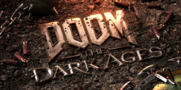

"Rip and tear until it is done" - King Novik
Doom: The Dark Ages isn’t a narrative work of art like Red Dead Redemption 2 or Ghosts of Tsushima, but it is, in fact, one of the most highly rated Boomer Shooters on the whole market. While the game's story can be seen as lackluster, the amount of lore Doom: The Dark Ages has, and the rest of the Doom Trilogy has, is staggering. Doom: The Dark Ages takes place between the end of Doom 2 from the original trilogy and the beginning of Doom 2016. You, the Doom Slayer, are sent by the Kahn Makerys to defend the Planet of Argent D’nru from the unending legions of Hell. For clarification, Doom 1, 2, and 64 make up the Original Trilogy. Where Doom 2016, Eternal, and The Dark Ages make up the Modern Trilogy. And before you ask, “What about Doom 3?” Doom 3 is the problem child that kinda screws up the entire story of the series, so it is either never acknowledged or is acknowledged but isn’t considered canon.
The characters flip to the character page on the script… “Doom Slayer, a former UAC Marine who fights through hell and becomes a god due to the Kahn Makerys, and kills everything that isn’t human in his way.” Yup, Doom Slayer is like the only important character, and a common phrase you will come by when talking to fans is “He is too angry to die”.
The gameplay of any of the Doom games is where they shine. The cons: this game takes a different approach than any of the previously mentioned titles. The Dragon Missions, these missions are meant to be cool, but they are more of a gimmick. And it is one of the major downsides to this game. The controls sometimes felt jank, and I would much rather fight my way through those same areas as the Slayer. The same thing could be said about the Mech missions. While this does sound bad, the core gun play and the addition of the parry mechanic, oh my god, it's fantastic. Dark Ages did the same thing as Eternal, giving the player very limited ammo to promote weapon swapping and the use of combos. And the addition of the chainsaw shield and the parry mechanic makes fights look almost cinematic. And I liked the addition of small open-world-style missions, because I felt like finding a secret way down into a cave felt more like a secret than a random vent that just happened to have a secret, like in 2016 or Eternal. As with any new title to the modern trilogy, the entire “Skill Tree” system is entirely different than the last. But they do work well with the game they are in. In the Dark Ages, to get stronger and have more skills or buffs, you need to find Gemstones. Some are offered as rewards for doing X, and others are found as a secret. Instead of finding Weapon upgrade drones, as in 2016 or Eternal, Dark Ages has you pick up gold, which is found all over every map. Don’t worry about having to collect every piece of gold; there is an excessive amount of excess gold. Arguably my favorite thing Id Software did away with was the multiplayer. If you know from 2016 and Eternal this was a good decision. I can’t 100% 2016 or Eternal because there are multiplayer achievements that I can’t get because no one plays multiplayer anymore. I will end with a disclaimer: the Doom series is one of the best boomer shooter series ever. Do not walk in expecting some masterpiece of a story, and you will be doing a disservice to yourself by not playing any of the other games. Also, word to the wise, if you ever hear “Who would win in a fight, Doom Slayer or Kratos?” Just don’t answer, or if you do, make sure you know your lore, because in the words of Batman from Batman Arkham Knight, “It's going to be a long night.”